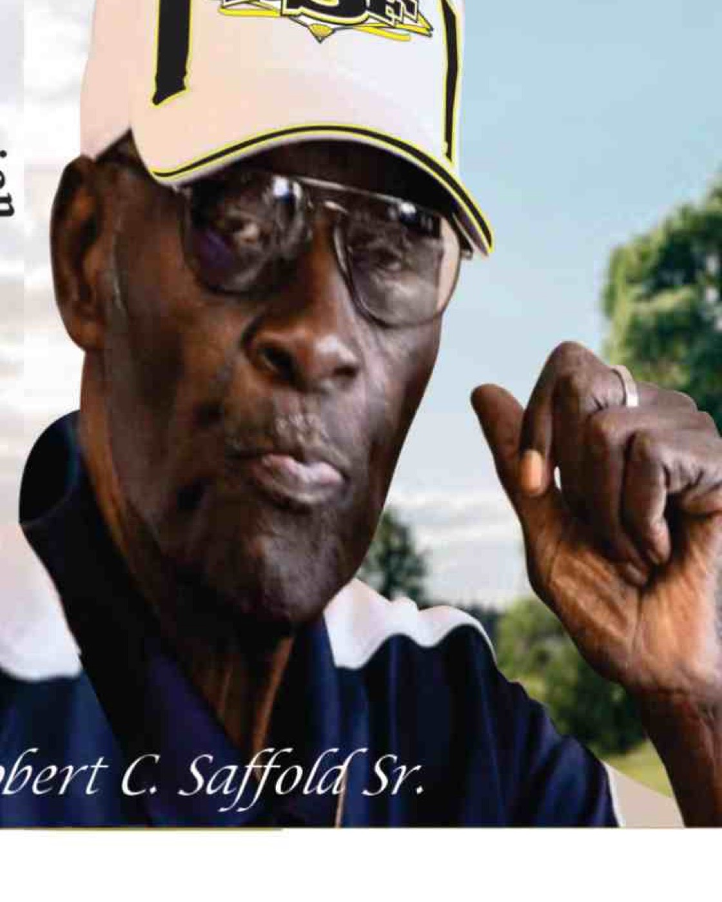
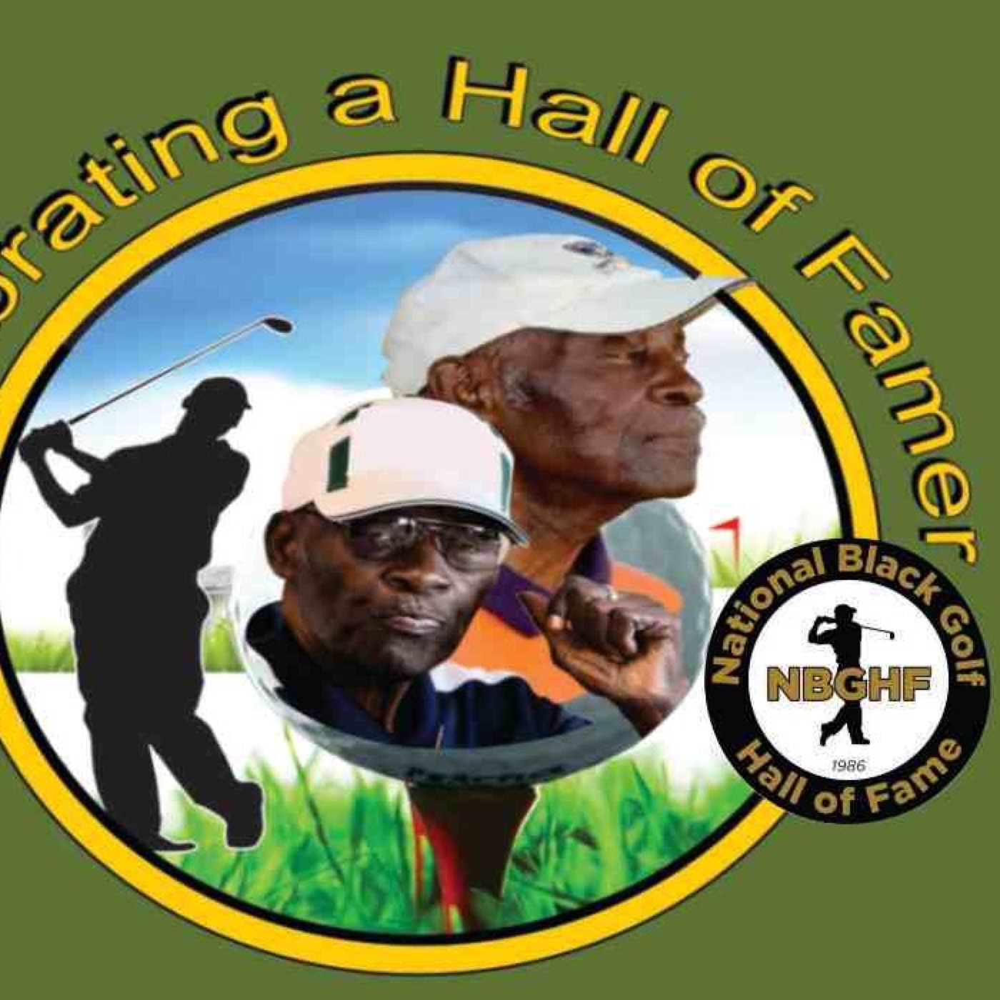
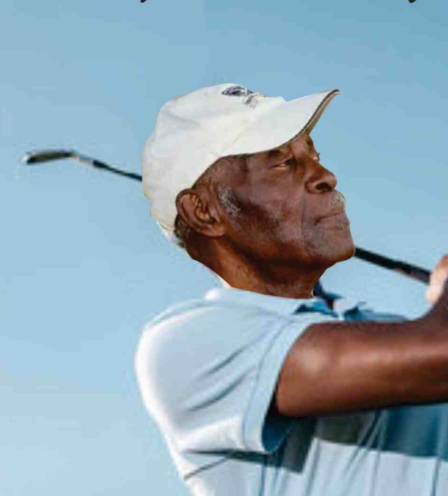

Our story
Robert C. Saffold Sr., 1929 to 2021
Army veteran. Bethune-Cookman graduate. Art teacher and coach for twenty-six years. Founder of the Florida Sportsmen Association. Two Halls of Fame. And, to several generations of Highlands County children, the man who made sure they got on the bus.
The teacher and the coach
Robert Saffold Sr. came to Sebring in 1957 to teach art and coach basketball and football at E.O. Douglas High School, the county's Black high school in the years of segregation, and later at Lake Placid High School. He coached for twenty-six years. His players remember the discipline; his students remember that he noticed them.
Outside the classroom he built the Washington Heights Youth Center so the neighborhood's children had somewhere to go, and he revived Sebring's Juneteenth celebration. Every November he leased buses, some years as many as six, to carry local students to a college campus and to the Florida Classic, the FAMU versus Bethune-Cookman game, so they could see where they might belong.

The golfer who organized
He founded the Florida Sportsmen Association, Sebring's club for Black golfers, at a time when the public course was not open to them. In 1972 he initiated the meeting at Harder Hall in Sebring that brought five clubs together to form the Sunshine State Golfers Association, which remains Florida's statewide association of African American golfers. He served as its president from 1979 to 1981.
The game recognized him twice: the National Black Golf Hall of Fame, Class of 1996, and the African American Golfers Hall of Fame in 2014.



A life in dates
- 1929Born. Serves in the U.S. Army in Germany; graduates from Bethune-Cookman.
- 1957Begins teaching art and coaching at E.O. Douglas High School in Sebring.
- 1972Convenes the Harder Hall meeting that creates the Sunshine State Golfers Association.
- 1979 to 1981President of the Sunshine State Golfers Association.
- 1996Inducted into the National Black Golf Hall of Fame.
- 2014Inducted into the African American Golfers Hall of Fame.
- 2021Dies on July 21 at 91. His son returns home to Sebring.
- 2022The Robert C. Saffold Sr. Foundation, Inc. is formed in his name.
- 2023The first Memorial Charity Golf Tournament is played.
The Foundation
Carrying it forward
Robert Saffold Jr. was one of the first four Black students to integrate Highlands County schools in 1966, as a fourth grader at Woodlawn Elementary. He spent his career in Tampa and came home after his father's death. In 2022 he formed the Foundation to continue what his father had started: the Florida Classic trip, the golf, the backpacks, the belief that a young person in Highlands County deserves a chance at the next thing.
The Foundation is a Florida nonprofit corporation and a 501(c)(3) public charity. Robert Saffold Jr. serves as President, Susan M. Saffold as Treasurer and Bobbie S. Powell as Secretary.
What we do